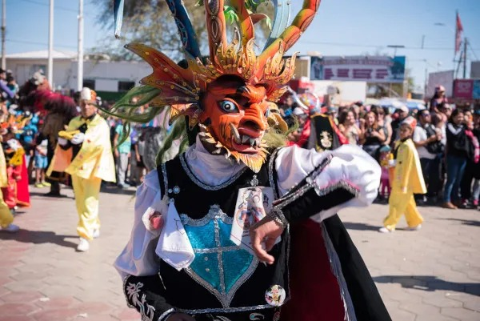
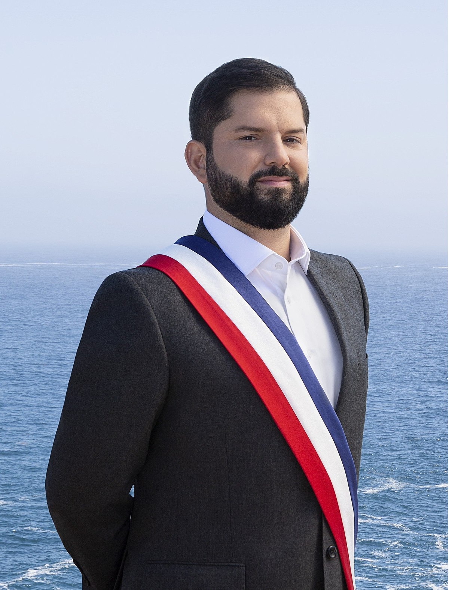

.png)
C h i l e
Saiba mais sobre o país, sobre a cultura costumes e muito mais!
.png)
H i s t ó r i a
O Chile foi originalmente ocupado por vários povos indígenas, foram colonizados pelos espanhóis e sofreram com uma ditadura no século XX.Segundo os historiadores e arqueólogos, os primeiros grupos humanos estabeleceram-se no Chile de 10 mil a 15 mil anos atrás.
Naturalmente, em princípio, os grupos humanos na região do Chile eram nômades que foram sedentarizando-se à medida que seu estilo de vida sofisticou-se e adaptou-se às mudanças climáticas que aconteceram naquela região
O território chileno foi ocupado por uma série de povos précolombianos, dos quais se destacaram os atacamenhos, aimarás, onawos, changos etc. Na ilha de Páscoa, localizada no meio do Oceano Pacífico, desenvolveu-se uma civilização polinésia conhecida como rapa nui, que foi responsável por uma construção muito famosa, os moais
A cultura pré-colombiana mais conhecida do Chile é a de um povo oriundo da cultura dosaraucanos: os mapuches. Estes formaram o maior povo indígena da região do Chile e, além disso,ficaram notabilizados por resistirem ao domínio dos incas e, depois, ao domínio dos espanhóis a partir do século XVI.
C u l t u r a
O Chile possui um arcabouço cultural bastante rico e único entre as diversas culturas americanas. Embora haja diversos povos indígenas e europeus (espanhóis), cujas tradições e costumes contribuíram diretamente para a sua formação, pode-se dizer que há grande homogeneidade na cultura chilena, conferindo, assim, uma identidade cultural àquele país.

As tradições chilenas incluem festas características que expressam muitas cores, danças, música andina, trajes típicos e elementos folclóricos, como as Festas Pátrias, a Festa de la Tirana, o Carnaval andino, e o Festival Tapati, que acontece na ilha de Páscoa.
Outras celebrações possuem cunho religioso, como a Festa Cuasimodo e a Festa da Virgem de Andacollo. Os trabalhos manuais expressam muito da identidade dos diversos povos indígenas do país, como o bordado e o artesanato. A cultura chilena se destaca também na literatura, com grandes nomes, como o poeta Pablo Neruda.
O país é conhecido pela qualidade de seus vinhos, e essa bebida é bastante comum como acompanhamento de alguns dos seus pratos típicos, que são as empanadas, o pastel de choclo, o ceviche e uma gama de outros preparos à base de peixes e frutos do mar.
I n f o r m a ç õ e s
g e r a i s
O país se destaca nos três setores da economia:agropecuária, serviços e indústria. A agropecuáriacorresponde a 5% do PIB e a 10% das exportaçõeschilenas. Esse setor da economia baseia-se nos cultivosde trigo, uva, aveia, cevada, milho, girassol, alho,beterraba, etc.
O Chile é um dos países mais industrializados da América Latina e algumas das suas principais atividadeseconômicas são a exploração de minérios (cobre,carbono e nitrato), os produtos manufaturados(processamento agroalimentar, produtos químicos,madeira) e a agricultura (pesca, vinhas e frutas).
• A economia chilena é conhecida internacionalmente como uma das mais sólidas do continente. O Chile é o país com maior número de tratados de livre comé assinados com áreas econômicas que representam 90% da população mundial.
• A moeda corrente no Chile é o peso chileno (código CLP), moeda oficial desde 1975.
• O Chile possui extensão territorial de 756.945 quilômetros quadrados, apresentando largura máxima de 175 quilômetros, sendo o comprimento de 4,3 mil km que se est pelo extremo oeste da América do Sul, com mais de 6.000 km de litoral ao long Oceano Pacífico.
P o l í t i c a
Estado unitário. Sua administração é funcional e territorialmente descentralizada, ou desconcentrada, de acordo com a lei. Para o governo e a administração interior do Estado, o território da República se divide em 15 regiões e 54 províncias. Para efeitos da administração local, as provinciais se dividirão em comunas (Art. 99 da Constituição Política do Estado), que totalizam 346.
Estas são governadas por 345 municipalidades, dado que a Municipalidade de Cabo de Hornos administra a agrupação Cabo de Hornos e Antártica.
O Congresso Nacional é bicameral. A Câmara dos Deputados é composta por 155 membros eleitos diretamente, com mandato de 4 anos. O Senado é composto por 50 membros eleitos diretamente, que são nomeados por 8 anos, mas metade de seus membros são renovados a cada 4 anos. O novo sistema eleitoral para eleições parlamentares, com o fim do sistema binomial, começou a ser aplicado a pa de 2017.
O mandato dos alcaldes e concejales durará quatro anos, com possibilidad reeleição. Para a Câmara dos Deputados, no âmbito do Congresso Nacional, o mandato também tem duração de quatro anos.
Uninominal para alcalde. Mecanismo plurinominal para concejales, baseado na proporcionalidade D'Hont. Câmara dos Deputados, no âmbito do Congr Nacional: plurinominal, com entre 3 e 8 deputados eleitos por votação direta em cad dos 28 distritos eleitorais em que se encontra dividido o país. Sen plurinominal, com representantes eleitos pro voto direto nos distritos senatoriais conformam cada uma das 15 regiões, nas quais se elegerão 2, 3 ou 5 senadores.
P o n t o s
t u r i s t i c o s

Plaza de Armas - Santiago

Catedral Metropolitana de Santiago – Santiago

Museo de Arte Precolombino – Santiago

Embalse el Yeso – Cajon del Maipo